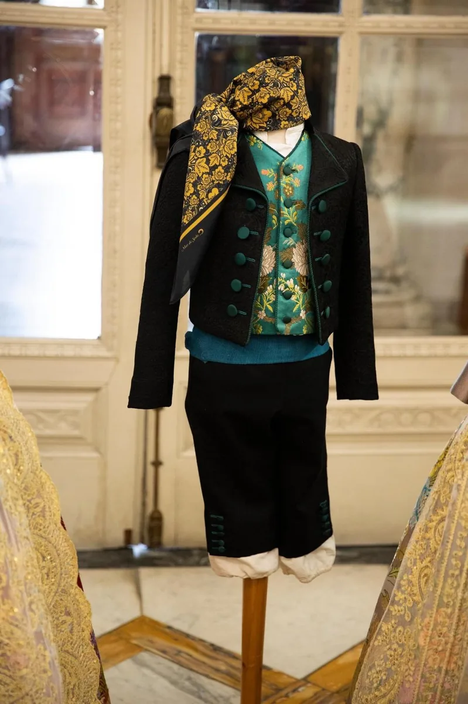
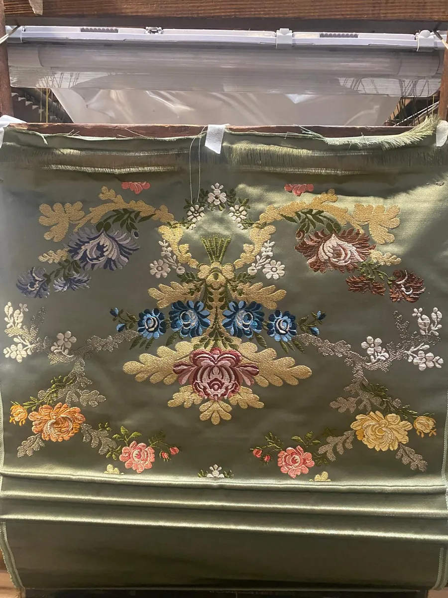

Tienda Centro
C/ Burriana, 21
46005 Valencia

✦ Indumentaria infantil a medida
Da igual si es la primera falda de una niña o el año más importante de una Fallera Mayor Infantil: aquí se cose con el mismo esmero. Los trajes de niña y de niño se hacen a medida, igual que los de adulto.
✦ Cómo se encarga
Se pide igual que el de una adulta: el traje completo y, si quieres, un corpiño de manga larga. Lleva algo menos de tela.
El traje de valenciano de niño también lo confeccionamos a medida, como el de adulto.
Si a una niña se le queda pequeño el traje, el arreglo más pedido es sacar tela. Y los cancanes de niña suelen llevar una lorza que se suelta cuando crece, para ganar largo.
✦ Fallera Mayor Infantil de València 2027
Julia Vizcayno Orero, de la falla Rosari-Plaça Calabuig, es la Fallera Mayor Infantil de València 2027. En Cosas Cucas la hemos visto crecer desde muy pequeña, cuando venía por tradición familiar y hacía del taller su rincón favorito entre telas y modistas.
Vestirla en toda su trayectoria ha sido un honor. En «Una Festa per a Tots», en Nuevo Centro, estrenó su primer traje como Fallera Mayor Infantil: un brocatel de seda y oro de fondo verde, de estilo del siglo XIX, confeccionado en Cosas Cucas.
Lee su noticia →✦ Fallera Mayor Infantil 2027 de la falla Malvarrosa
Amanda Dàries Ricart es la Fallera Mayor Infantil 2027 de la falla Avinguda Malva-rosa-Antoni Ponz-Cavite. Todos los trajes de su reinado los hemos confeccionado en Cosas Cucas.
La tela de su traje verde es de la Compañía Valenciana de la Seda, modelo «Carpio»: rosas y flores azules y amarillas sobre fondo verde. Amanda fue a ver la tela cuando todavía estaba en el telar de madera, y en el taller la convertimos en su traje.
Antes vestimos a su hermana Julia, que fue Fallera Mayor Infantil de la falla Malvarrosa en 2023 y Corte de Honor de la Fallera Mayor Infantil de València en 2024. Es una familia que siempre ha confiado en Cosas Cucas para todos sus trajes.
Lee su noticia →
✦ Indumentaria de honor
Toca una foto para verla en grande.
✦ Desfiles y exposiciones
En el I Desfile de Indumentaria del Gremio, en 2018, a beneficio de Aspanion, la asociación de niños con cáncer, sacamos siete trajes de nuestro taller. Entre ellos, tres de niña (uno rosa, otro celeste y otro con mantilla blanca) y el de un niño pequeño.
En Tradicions 2021, en el Museu de les Ciències, desfilamos con una niña con un traje amarillo de grandes flores lilas y con dos niños vestidos de labrador.
Y en la exposición «Joies de la Indumentària» de 2022 llevamos el traje de niño que abre esta página: chaqueta negra de vivos verdes, chaleco turquesa de flores y calzón negro.
Desfile del Gremio 2018 →
Tradicions 2021 →
Joies de la Indumentària 2022 →
✦ Preguntas frecuentes
Igual que el de una adulta. Al encargarlo, aclara quién pone la tela y qué piezas entran: cancán, cintas, puntillas, forros, manteleta, zapatos… Pide cita y te asesoramos sin compromiso.
No hay una cifra fija: depende del ancho de la tela, de la talla y del vuelo. Como referencia, el espolín se teje a 54 cm de ancho, y para el traje completo de la Fallera Mayor Infantil de València se encargan 12,50 m (13,50 m para la Fallera Mayor de València).
Se saca tela: es el arreglo que más nos piden. En los cancanes de niña se suelta la lorza para ganar largo.
Sí, a medida, igual que el de adulto.
Depende sobre todo de la tela y de las joyas, y también de los bordados y de la confección. Te hacemos el presupuesto sin compromiso; pregunta qué piezas entran.
✦ También hacemos
✦ Ven a vernos
Te atendemos en cualquiera de nuestras dos tiendas, con cita previa.
C/ Burriana, 21
46005 Valencia
C/ Vicent Gallart, 49
46011 Valencia
Escríbenos y te damos cita.
Consulta el horario de cada tienda en la web principal.
Ver horario →